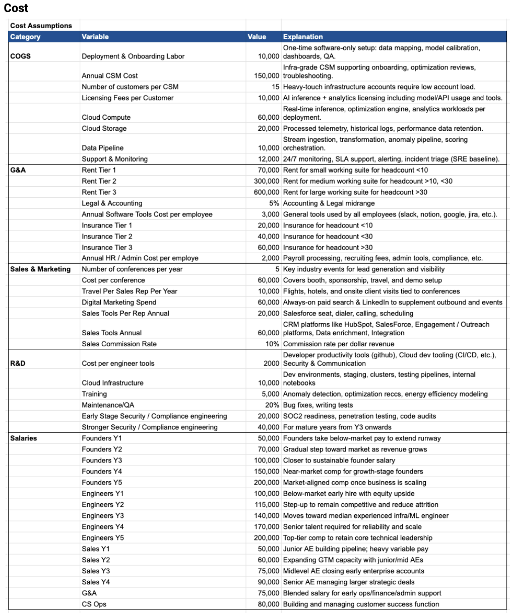
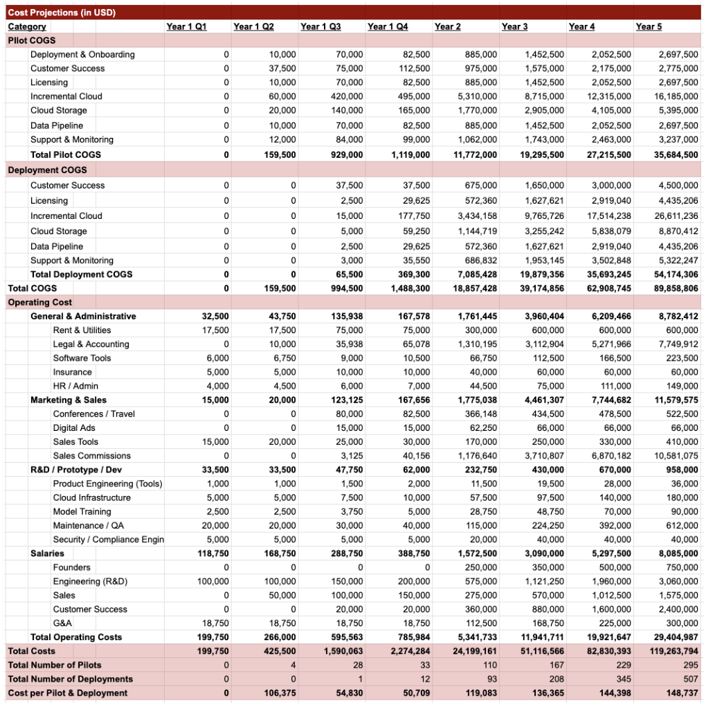
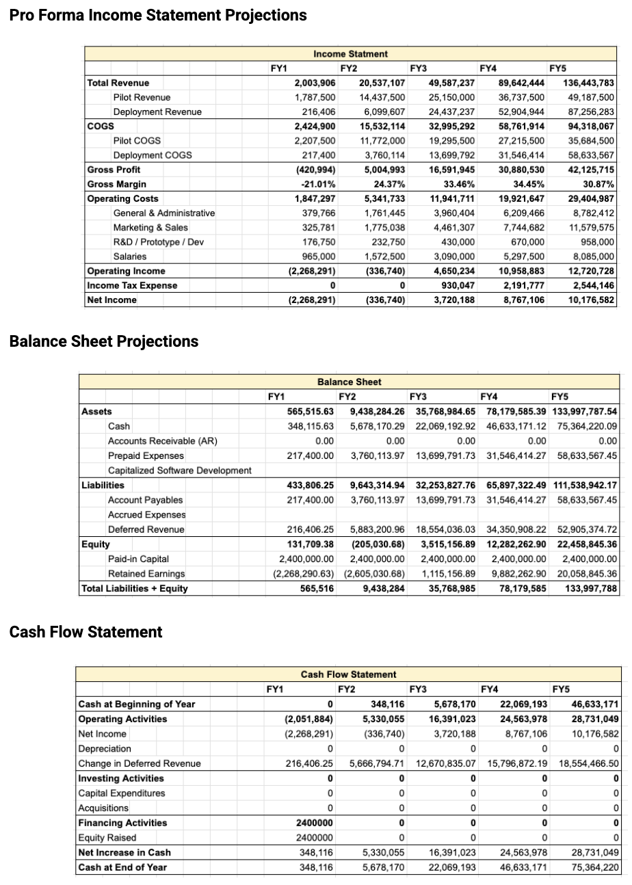

A semester-long venture project focused on entrepreneurship execution: market validation, business modeling, and investor-ready financials in the field of data center efficiency.
Team
Jiwon Yoo, Salter Arms, Justin Dang, Maitlyn Lang
Timeline
Fall 2025
Brown University — Entrepreneurial Processes
Skills
DeepCurrent was developed as part of Entrepreneurial Processes, a milestone-driven course designed to simulate how real startups are formed, evaluated, and pitched. Teams were assigned randomly, and the course emphasized process over polish—moving from problem discovery to a full business plan through structured deliverables.
Rather than focusing on a high-fidelity product, the class centered on entrepreneurial decision-making: validating opportunities, designing business models, planning growth, and building financials that could withstand investor-style scrutiny.
I contributed across the early stages of the venture—ideation, market research, and business model design—but took primary ownership in the later stages of the project over the financial modeling and quantitative validation.
I built a driver-based spreadsheet model that translated our assumptions into revenue and cost projections, financial statements, and unit economics. This model became the backbone of our business plan and pitch, grounding strategic discussions in numbers rather than intuition.
As AI accelerates compute demand, data centers face rising energy costs and tighter operational constraints. Efficiency is no longer a “nice-to-have”—it’s a cost and capacity lever. But many operators still struggle to identify where energy waste is happening and how to act on it quickly without increasing reliability risk.
DeepCurrent explores a software-first approach to improving operational efficiency by translating complex operations into measurable, decision-ready insights. In this project, our goal wasn’t to claim a perfect solution—it was to build a credible business case: who pays, why they pay, how the model scales, and what the cash flow story looks like.
Our research combined both top-down and bottom-up approaches to validate the opportunity and inform our assumptions.
Insights from this research directly shaped our pricing logic, pilot structure, and revenue assumptions—ensuring the financial model reflected how B2B decisions are actually made.
The project’s success criteria were clarity and credibility: a model and narrative that makes it easy to answer, “What happens if this assumption changes?” and “Does the business still work?”
These outputs come from a driver-based, formula-linked model—key assumptions flow through equations into projections and statements, rather than being manually hardcoded. This made it easy to update inputs and keep reporting consistent as our business plan evolved.
See the Financial Model
Example assumption: Costs

Example projections: Costs

The financial model wasn’t a final deliverable—it was a decision-making tool. Building it forced us to confront tradeoffs around pricing, growth pace, and cost structure, and to align on what assumptions truly mattered.
During our pitch, the model helped anchor the narrative: instead of speculative claims, we could explain how the business makes money, why the economics work, and where the risks are. This shifted conversations from “Is this a good idea?” to “What would need to be true for this to succeed?”
DeepCurrent was my first deep exposure to building a B2B business from the ground up. Unlike consumer products, progress depended less on intuition and more on structure—clear assumptions, credible economics, and alignment across stakeholders.
The project taught me that entrepreneurship is a systems problem: research informs assumptions, assumptions drive models, and models shape decisions. Collaborating across functions while maintaining a single source of financial truth was both challenging and rewarding—and it’s the kind of work I’m excited to continue doing.